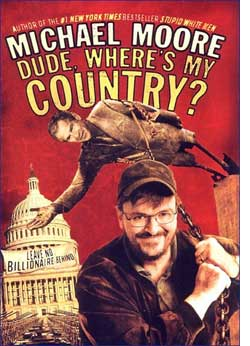

|

Face it, you'll never be rich
Why do Americans still believe in the rags-to-riches fairy tale? Michael Moore explains why the corporate bosses will never let the American dream become a reality
- - - - - - - - - -
by Michael Moore
 ERHAPS THE BIGGEST success of the war on terror has been its ability to distract the nation from the corporate war on us. In the two years since the attacks of 9/11, American businesses have been on a punch-drunk rampage that has left millions of average Americans with their savings gone and their pensions looted, their hopes for a comfortable future for their families diminished or extinguished. The business bandits (and their government accomplices) who have wrecked our economy have tried to blame it on the terrorists, they have tried to blame it on Clinton, and they have tried to blame it on us. ERHAPS THE BIGGEST success of the war on terror has been its ability to distract the nation from the corporate war on us. In the two years since the attacks of 9/11, American businesses have been on a punch-drunk rampage that has left millions of average Americans with their savings gone and their pensions looted, their hopes for a comfortable future for their families diminished or extinguished. The business bandits (and their government accomplices) who have wrecked our economy have tried to blame it on the terrorists, they have tried to blame it on Clinton, and they have tried to blame it on us.
But, in fact, the wholesale destruction of our economic future is based solely on the greed of the corporate mojahedin.
The takeover has happened right under our noses. We've been force-fed some mighty powerful "drugs" to keep us quiet while we're being mugged by this lawless gang of CEOs. One of these drugs is called fear and the other is called Horatio Alger.
The fear drug works like this: you are repeatedly told that bad, scary people are going to kill you, so place all your trust in us, your corporate leaders, and we will protect you. But since we know what's best, don't question us if we want you to foot the bill for our tax cut, or if we decide to slash your health benefits or jack up the cost of buying a home. And if you don't shut up and toe the line and work your ass off, we will sack you - and then just try to find a new job in this economy, punk!
The other drug is nicer. It is first prescribed to us as children in the form of a fairy tale - but a fairy tale that can actually come true! It is the Horatio Alger myth. Alger was one of the most popular American writers of the late 1800s. His stories featured characters from impoverished backgrounds who, through pluck and determination and hard work, were able to make huge successes of themselves in this land of boundless opportunity. The message was that anyone can make it in America, and make it big.
We are addicted to this happy rags-to-riches myth in this country. People in other industrialised democracies are content to make a good enough living to pay their bills and raise their families. Few have a cutthroat desire to strike it rich. They live in reality, where there are only going to be a few rich people, and you are not going to be one of them. So get used to it.
Of course, rich people in those countries are very careful not to upset the balance. Even though there are greedy bastards among them, they do have some limits placed on them. In the manufacturing sector, for example, British CEOs make 24 times as much as their average workers - the widest gap in Europe. German CEOs only make 15 times more than their employees, while Swedish CEOs get 13 times as much. But here in the US, the average CEO makes 411 times the salaries of their blue-collar workers. Wealthy Europeans pay up to 65% in taxes, and they know better than to bitch too loud about it or the people will make them fork over even more.
In the US, we are afraid to sock it to them. We hate to put our CEOs in prison when they break the law. We are more than happy to cut their taxes even as ours go up! We don't want to do anything that could harm us on that day we end up millionaires. It's so believable because we have seen it come true. In every community there's at least one person prancing around as the rags-to-riches poster child, conveying the not-so-subtle message: "SEE! I MADE IT! YOU CAN, TOO!!"
It is this seductive myth that led so many millions of working people to become investors in the stock market during the 90s. They saw how rich the rich got in the 80s and thought, "Hey, this could happen to me!"
The wealthy did everything they could to en courage this attitude. Understand that in 1980 only 20% of Americans owned a share of stock. Wall Street was the rich man's game and it was off-limits to the average Joe and Jane. Near the end of the 1980s, though, the rich were pretty much tapped out with their excess profits and could not figure out how to make the market keep growing. I don't know if it was the brainstorm of one genius at a brokerage firm or the smooth conspiracy of all the well-heeled, but the game became, "Hey, let's convince the middle class to give us their money and we can get even richer!"
Suddenly, it seemed like everyone I knew jumped on the stock market bandwagon. They let their unions invest all their pension money in stocks. Story after story ran in the media about how everyday working people were going to be able to retire as near-millionaires! It was like a fever that infected everyone. Workers immediately cashed their pay cheques and called their broker to buy more stocks. Their broker!
There were ups and downs, but mostly ups, lots of ups, and you could hear yourself saying, "My stock's up 120%! My worth has tripled!" You eased the pain of daily living by imagining the retirement villa you would buy some day or the sports car you could buy tomorrow if you wanted to cash out now. No, don't cash out! It's only going to go higher! Stay in for the long haul! Easy Street, here I come!
But it was a sham. It was all a ruse concocted by the corporate powers-that-be who never had any intention of letting you into their club. They just needed your money to take them to that next level, the one that insulates them from ever having to actually work for a living. They knew the big boom of the 90s couldn't last, so they needed your money to artificially inflate the value of their companies so their stocks would reach such a phantasmal price that, when it was time to cash out, they would be set for life, no matter how bad the economy got.
And that's what happened. While the average sucker was listening to all the blowhards on CNBC tell him that he should buy even more stock, the ultra-rich were quietly getting out of the market, selling off the stocks of their own company first. In September 2002, Fortune magazine released a staggering list of these corporate crooks who made off like bandits while their company's stock prices had dropped 75% or more between 1999 and 2002.
At the top of the list of these evildoers was Qwest Communications. At its peak, Qwest shares traded at nearly $40. Three years later the same shares were worth $1. Over that period, Qwest's director, Phil Anschutz, and its former CEO, Joe Nacchio, and the other officers made off with $2.26bn simply by selling out before the price hit rock bottom.
Meanwhile, the average investor stayed in, listening to all the rotten advice. And the market kept going down, down, down. More than four trillion dollars was lost in the stock market. Another trillion dollars in pension funds and university endowments is now no longer there.
So, here's my question: after fleecing the American public and destroying the American dream for most working people, how is it that, instead of being drawn and quartered and hung at dawn at the city gates, the rich got a big wet kiss from Congress in the form of a record tax break, and no one says a word? How can that be?
I think it's because we're still addicted to the Horatio Alger fantasy drug. Despite all the damage and all the evidence to the contrary, the average American still wants to hang on to this belief that maybe, just maybe, he or she (mostly he) just might make it big after all. So don't attack the rich man, because one day that rich man may be me!
Listen, friends, you have to face the truth: you are never going to be rich. The chance of that happening is about one in a million. Not only are you never going to be rich, but you are going to have to live the rest of your life busting your butt just to pay the cable bill and the music and art classes for your kid at the public school where they used to be free.
And it is only going to get worse. Forget about a pension, forget about social security, forget about your kids taking care of you when you get old because they are barely going to have the money to take care of themselves.
If you are still clinging to the belief that not all of Corporate America is that bad, consider this example of what our good captains of industry have been up to of late.
Are you aware that your company may have taken out a life insurance policy on you? Oh, how nice of them, you say? Yeah, here's how nice it is.
During the past 20 years, companies including Disney, Nestle, Procter & Gamble, Dow Chemical, JP Morgan Chase and Wal-Mart have been secretly taking out life insurance policies on their low- and mid-level employees and then naming themselves - the corporation - as the beneficiary! That's right: When you die, the company - not your survivors - gets to cash in. If you die on the job, all the better, as most life-insurance policies are geared to pay out more when someone dies young. And if you live to a ripe old age, even long after you've left the company, the company still gets to collect on your death. And regardless of when you croak, the company is able to borrow against the policy and deduct the interest from its corporate taxes.
Many of these companies have set up a system for the money to go to pay for executive bonuses, cars, homes or trips to the Caribbean. Your death goes to helping make your boss a very happy man sitting in his Jacuzzi on St Bart's.
And what does Corporate America privately call this special form of life insurance?
Dead Peasants Insurance.
That's right. "Dead Peasants". Because that's what you are to them - peasants. And you are sometimes worth more to them dead than alive.
These edited extracts are taken from Michael Moore's book, Dude, Where's My Country?

|